2. StellarMate Pro
Warning
NEVER LOOK AT THE SUN WITH YOUR TELESCOPE OR CAMERA WITHOUT APPROPRIATE FILTERS IN PLACE. PERMANENT AND IRREVERSIBLE DAMAGE TO YOUR EYES AND YOUR EQUIPMENT WILL OCCUR.
Warning
NEVER EXCEED 16V DC INPUT VOLTAGE AS IT MIGHT CAUSE IRREVERSIBLE DAMAGE TO THE CONTROLLER AND ANY EQUIPMENT CONNECTED TO IT.
Warning
OUTPUT VOLTAGE FOLLOWS INPUT VOLTAGE. IF OUTPUT VOLTAGE EXCEEDS THE CONNECTED EQUIPMENT VOLTAGE LIMITS, IT MAY CAUSE PERMANENT DAMAGE TO THE CONNECTED EQUIPMENT.
Warning
DO NOT DISASSEMBLE THE UNIT OR ATTEMPT REPAIRS. DO NOT SUBJECT THE UNIT TO WET ENVIRONMENTS. IRREVERSIBLE DAMAGE TO THE CONTROLLER AND ANY EQUIPMENT CONNECTED TO IT.
2.1. Introduction
Thank you for purchasing StellarMate Pro. StellarMate Pro (SM Pro) is a compact and powerful Astrophotography Controller that supports numerous Mounts, Cameras, and other astronomical equipment. SM Pro is a complete astrophotography solution and comes preloaded with all the necessary software and drivers required to operate astronomical equipment, no additional 3rd party software is required.
In addition to its role as a dedicated astronomical equipment controller, SM Pro offers comprehensive power distribution capabilities. It can power up to four 12V DC devices, two 12V Dew Heaters, and one adjustable voltage output ranging from 3-9V. To power all connected devices, a 12V @ 10A DC regulated power supply (Not included) is required. The unit ships with a robust high-density XT-60 connector, engineered to withstand currents of up to 60A.
Warning
SM Pro does not include a Power Supply. A regulated 12V power supply rated at 10A or higher is required. Do not connect StellarMate Pro to a 12V field battery without a 12V Regulator as this may cause irreversible damage to the unit and/or connected devices. The official StellarMate Pro Power Supply (IKA-834) is certified to work with StellarMate Pro.
SM Pro is equipped with a built-in GPS/GLONASS receiver that provides highly accurate location and time services necessary for accurate and reliable operations of your equipment whether you are on the field or in a stationary observatory. Passive GPS and WiFi antennas are optimized to provide high gain even in noisy environments. Reliable communication between SM Pro and your controller (Mobile, Tablet, or PC/Mac) is critical for the operation of the unit.
SM Pro provides unparalleled freedom in selecting your favorite platform to control your equipment:
Standalone: Since SM Pro is a mini Computer, you can connect it to an external monitor via HDMI cable and connect a mouse/keyboard to use StellarMate OS directly. However, since SM Pro is usually mounted on the telescope, this control method is not recommended.
Mobile: Operate SM Pro remotely via WiFi using StellarMate App for Android/iOS. It is highly recommended to run StellarMate App on modern Tablets/iPad with screen sizes 10” or more to get the best experience. While phones are supported, the SM App is optimized to run on tablets.
Windows/Mac/Linux: Use Ekos astrophotography tool on Windows, MacOS, or Linux. Remotely control StellarMate via WiFi, Local Area Network (LAN) or Wide Area Network (WAN). Ekos supports advanced functionality including mosaic planner and scheduler.
Using StellarMate Pro is simple. To get started right away:
Connect your equipment (Mount, Camera, DSLR, Focuser, Filter Wheel..etc) to StellarMate Pro via USB or WiFi.
Power your equipment via connecting them to SM Pro power ports.
Connect to StellarMate Pro from either your Mobile, Tablet, or Laptop/Desktop Computer.
Start controlling your setup and image from any major platform.
{kind=link}
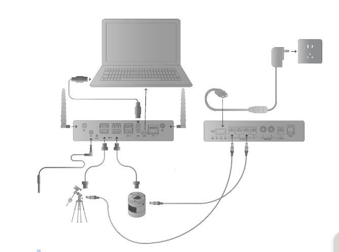
2.2. Specifications
StellarMate Pro is available in two variants:
StellarMate Pro 4GB RAM and 64GB SSD.
StellarMate Pro 8GB RAM and 128GB SSD.
OS |
StellarMate OS |
Processor |
Broadcom BCM2711 Quad Core |
Graphics |
On Chip GPU |
Memory |
4GB/8GB LPDDR4 |
Storage |
64GB/128GB SSD |
Network Connection |
|
USB |
|
Power Output |
445 |
Auxialiary |
445 |
Storage
Model |
OS Storage (GB) |
Photo Storage (GB) |
Rescue Storage (GB) |
IKA-850-64GB | 30 |
73 |
15 |
|
IKA-850-128GB | 30 |
193 |
15 |
|
2.3. Package Contents
{kind=link}
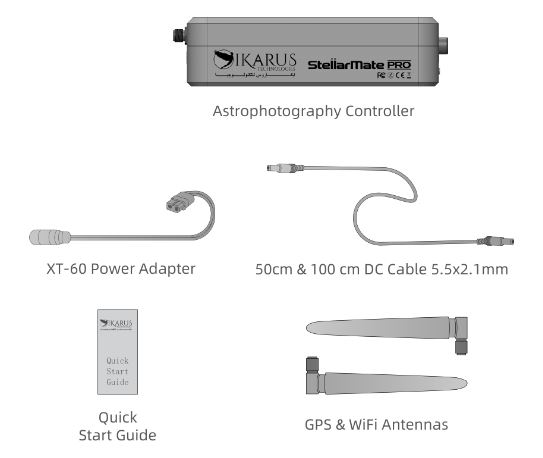
The following items are included in the StellarMate Pro box:
StellarMate Pro Unit.
Quick Start Guide and EkosLive Pro offer.
GPS Antenna.
WiFi Antenna.
100cm 5.5x2.1mm DC Male to Male Cable.
50cm 5.5x2.1mm DC Male to Male Cable.
XT-60 to DC Female Power Adapter Cable.
2.4. Assembling the Unit
{kind=link}
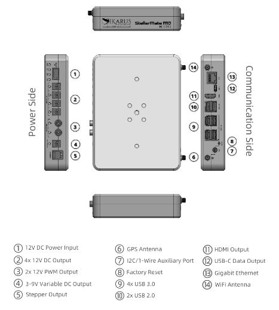
Attach the GPS and WiFi antennas to their respective SMA connectors on the SM Pro Communication Side.
{kind=link}
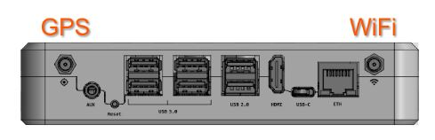
Warning
DO NOT SWAP THE ANTENNAS AND DO NOT REMOVE WHILE THE UNIT IS POWERED AS THIS MAY LEAD TO COMMUNICATION LOSS.
Connect the XT-60 Power Adapter to the XT-60 female plug on the Power Side. The adapter’s female DC jack needs to be connected to an external regulated & stable 12V power supply rated for 10 Amperes or higher.
{kind=link}
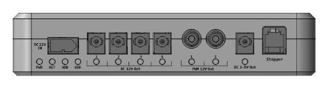
Alternatively, you may connect Ikarus Technologies certified 12V@10A Universal Power Supply (Sold Separately) directly to the unit.
2.5. Mounting
StellarMate Pro is quiet with no moving parts. The sturdy anodized CNC-machined case can be secured to dovetails, rings, or standard tripod head. Ikarus Universal Losmandy/Vixen Clamp (Sold Separately) can be used to couple the unit to the mount’s dovetail.
{kind=link}
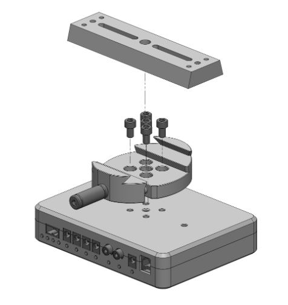
The case can be mounted onto a standard tripod head via the central ¼”-20 UNC thread. All the other threads are standard M6x1.0. The M6 screws length should not exceed 10mm.
{kind=link}
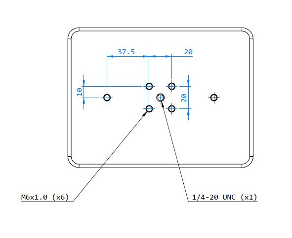
2.6. Power Connections
Paramter |
unit |
min |
max |
Norminal |
||
1 |
Voltage Input DC |
v |
10 |
16 |
12 |
|
2 |
12V DC Output (1 - 4) Load |
A |
_ |
16 |
_ |
|
3 |
12V PWM Output (1 - 2) Load |
A |
_ |
16 |
_ |
|
4 |
Variable Output Voltage |
V |
3 |
16 |
_ |
|
5 |
Variable Output Load |
A |
_ |
16 |
_ |
|
6 |
USB2 Current Capability |
A |
_ |
16 |
_ |
|
7 |
USB3 Current Capability |
A |
_ |
16 |
_ |
|
8 |
Total Output Load (12V DC + PWM Outputs) |
A |
_ |
16 |
_ |
|
9 |
Total Output Load (USB2) |
A |
_ |
16 |
_ |
|
10 |
Total Output Load (USB3) |
A |
_ |
16 |
_ |
|
The output voltage of the 12V DC Outputs (DC output and dew heater output) are depending on the input voltage. The outputs are not regulated, meaning the voltage on the output will be the same as the input voltage.
That is why the recommended input voltage is 12V, so you can connect 12V devices on the DC outputs and PWM outputs. The DC and PWM outputs are short-circuit protected.
If the input voltage is different than 12V you may risk damaging the connected devices on the DC outputs.
The SM PRO is protected against over voltage, so it will not get damaged, but over voltage on the input may damage the connected devices on the DC output ports.
2.7. Connecting from PC
StellarMate Pro operates on its own dedicated port 12624. If you use StellarMate App to create equipment profiles, then the driver is automatically appended to your equipment profile. Similary, if you try to start an equpiment profile remotely from a PC/Mac, then the Web Manager automatically adds the SM Pro driver to your equipment profile. However, if you create an equipment profile directly in StellarMate Pro (for example, via VNC), then you need to explicitly add the driver in the Remote Driver section:
@localhost:12624
{kind=link}
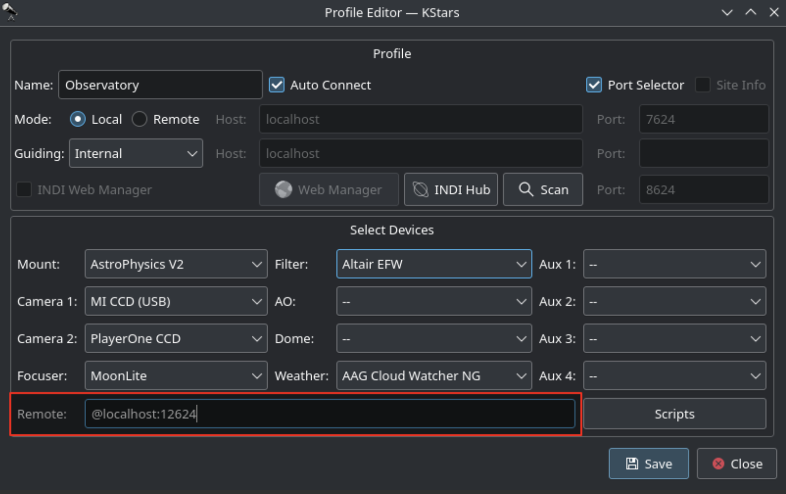
2.8. Startup
StellarMate Pro takes 30-60 seconds to fully startup from a cold start. If the buzzer is enabled (default), then a double-beep indicates the unit is ready for sure.
Once the unit is ready, all previous configuration is loaded and applied including the power status of all outputs. Please note that on a soft-restart (i.e. restarting the unit from the Device tab in the StellarMate App), then all output ports shall retain their power settings throughout the soft restart process.
{kind=link}
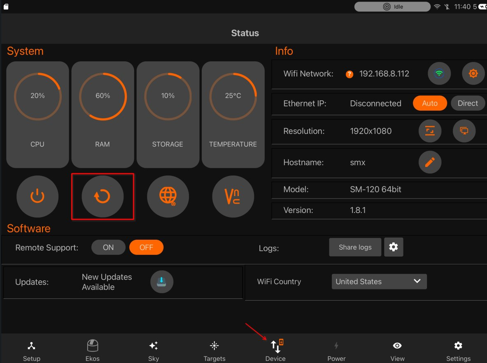
After the unit is started, use the StellarMate App to connect to the unit and operate it. Start your equipment profile or schedule a session with the scheduler.
2.9. Shutdown
It is generally safe to cut the power to the unit on shutdown. However, it is recommended to commence shutdown from the StellarMate App Device tab. This is a safer approach that ensures all settings are saved and all write operations are completed before shutting down.
{kind=link}
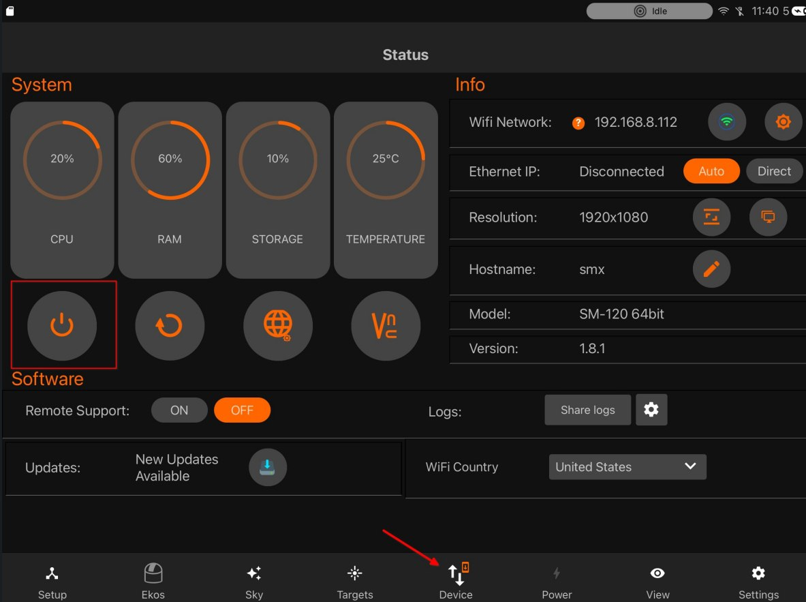
If the buzzer is enabled, a single beep indicates that the shutdown is complete.
By default, power is not cut off from any attached devices on shutdown as long as the 12V input power is active. To change this behavior, enable the Power Off option in the Power tab. If enabled, then disconnecting the Equipment Profile will cut off power to all attached devices as well.
Generally, it is recommended to follow these steps to conclude your sessions: 1. Park Mount & Dome. 2. Disconnect Equipment Profile in Setup tab. 3. Execute shutdown from Device tab. For permanent observatories, SM Pro can be powered for extended periods of time given that it is kept in a cool dry environment.
2.10. GPS
GPS StellarMate Pro comes equipped with an integrated GPS/GLONASS receiver paired with an external passive antenna. It is specifically engineered for outdoor applications and may not function optimally without an unobstructed view of the sky. This receiver offers concurrent reception capability for GPS, GLONASS, Galileo, BDS, and QZSS open service L1 signals. With an impressive tally of 33 tracking channels, 99 acquisition channels, and 210 PRN channels, the SM Pro is adept at acquiring and monitoring various combinations of satellite signals.
Beyond its location services, the GPS functionality supplies highly precise timing information, which plays a pivotal role in numerous astronomical calculations executed within the device. Precise time synchronization is achieved by utilizing the GPS Pulse-Per-Second signal (PPS). The GPS PPS signal offers an extremely accurate and stable time reference.
Warning
Any connected USB 3.0 device may interfere with the GPS signal leading to a failure to obtain 3D lock. Interference can be mitigated by using double-shielded USB 3 cables or by disconnecting any USB 3.0 devices during power up to allow StellarMate Pro to obtain a lock first. With StellarMate Pro Board v1.3 or later, external Active GPS antennas are supported.
Passive and Active GPS Antenna
By default, SM Pro is shipped with a passive GPS antenna. Due to interference issues from USB 3.0 devices and other sources, the satellite signal may not be sufficient to obtain a GPS lock. An active antenna can be used to overcome this limitation. The Ikarus Technologies Active GPS Antenna (IKA-860) is recommended. Place the antenna at least 50 cm away from SM Pro. In StellarMate App, tap the GPS status indicator to toggle between the Passive & GPS antennas.
GPS status is displayed in the StellarMate Pro App Power tab.
{kind=link}
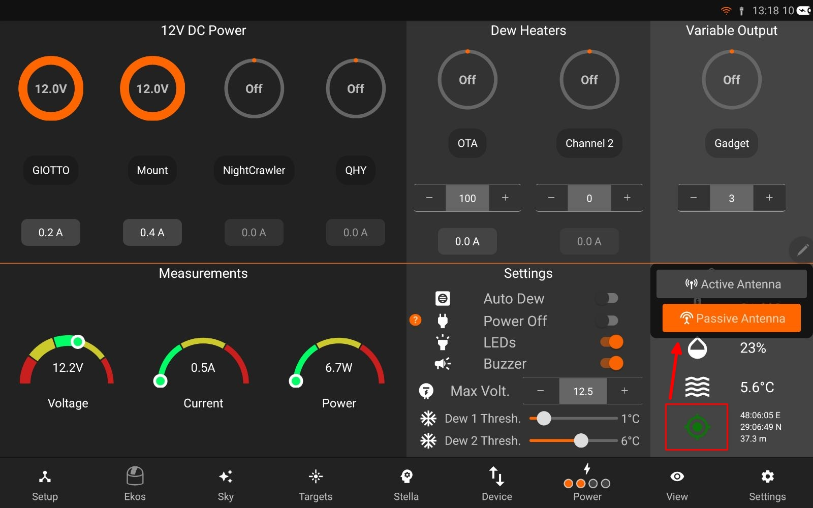
The USR LED is used to designate the GPS lock status:
Flashing: Satellite acquisition is in progress.
Solid: A 3D GPS lock is obtained.
2.11. Auxiliary Ports
StellarMate Pro offers a highly adaptable and future-ready I2C/1-Wire Auxiliary port, designed to accommodate inputs from environmental sensors, relay controls, DSLR camera snap controllers, and various third-party accessories, provided they are supported by the applicable software. External auxiliary devices can be seamlessly connected to this port using a standard 4-pole TRRS connector. Furthermore, the system allows for multiple I2C connectors to be daisy-chained on the same bus, enabling access to multiple external peripherals.
1-Wire is supported by the hardware, but software support is due pending a future firmware update.
For the acquisition of temperature and humidity data, it is recommended to employ the certified Ikarus Technologies Temperature Sensor (IKA-855). This sensor plays a critical role in specific operations, including automatic dew control.
2.12. Stepper Control
StellarMate Pro is equipped with a TMC2209 stepper controller that is certified to operate Two-Phase Bipolar Stepper Motors up to 2.8A Peak. The INDI SM Pro driver includes focuser support that can directly drive the motor and support relative positioning, backlash compensation, and homing.
Currently, there are no ready-assembled cables to connect a focuser stepper motor directly to StellarMate Pro, so you need to make your own cable using the wiring diagram below:
{kind=link}
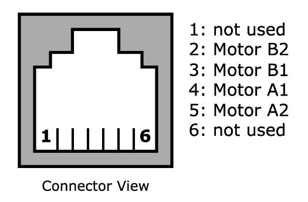
An male RJ12 6P4C (or 6P6C) plug needs to be wired to the motor as illustrated above.
2.13. Compatible Motors
- Compatible motors
NEMA-17
2.14. Maintenance
Following main sections for maintaining SM Pro:
2.14.1. Care Instructions
Use voltage-regulated power supply with a surge protector.
Keep StellarMate Pro’s firmware updated for optimal performance and compatibility.
Store in a cool, dry place away from direct sunlight or extreme temperatures.
Avoid exposing StellarMate Pro to moisture or liquids to prevent damage.
Handle the device with care to prevent physical damage or impact.
Backup your data and configurations regularly to prevent data loss.
Do not operate a unit below zero Degrees Celsius or higher than 35 degrees Celsius ambient temperature.
2.14.2. Factory reset
A partial or full factory reset can be performed. To perform a complete factory reset, use a thin pin (Not Included) to toggle the reset button located at StellarMate Pro communication side
- The following are the steps required to perform a factory reset:
Use a pin to press the reset button while the unit is off.
Power on the unit.
Wait until you start hearing a repeating slow beep.
Release the pin
Select the Factory Reset mode:
Partial Recovery: Restore operating system, but keep settings and photos. Use the pin to toggle the reset button momentarily.
Full Recovery: Restore operating system and settings. All settings and captured photos are reset to default. Use the pin to press and hold for at least 3 seconds then release.
A fast beep indicates restoration is in progress. Wait until the recovery process is complete. It can take anywhere from 3 to 5 minutes to complete. Afterwards, the unit will automatically reboot.
2.14.3. Fuses
StellarMate Pro is equipped with with two fuses to protect circuit against over-current:
Top Fuse: If the top cover is removed this fuse can be easily accessed. The fuse type is a 10A (red) mini blade fuse.
{kind=link}
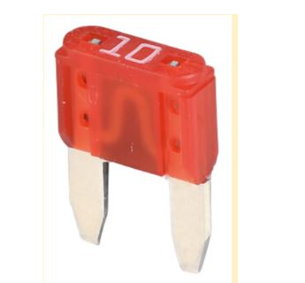
This fuse is protecting the power outputs.
Bottom Fuse: If the top cover and the PCB is removed this fuse can be accessed. The fuse is an 8A very fast acting type e.g. a “NANO2” type from Littelfuse (0453008.MR), but fuses from other manufacturer are also compatible which has the following outer diameter.
{kind=link}
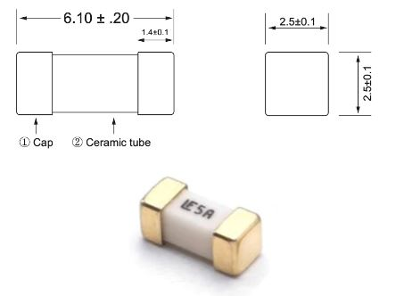
This fuse is protecting the internal circuits and USB connector, if the fuse is burned please contact us before replacing.
2.14.4. Replace Computing module
This guide outlines the steps to replace a faulty Raspberry Pi CM4 on your StellarMate Pro. It is crucial to handle electronic components with care to prevent damage. Always wear an anti-static wrist strap to protect sensitive components from electrostatic discharge (ESD).
Required Tools
Phillips head screwdriver (M2.5 and M3 sizes)
Anti-static ESD wrist strap
{kind=link}
Procedure
Power Off: Ensure the StellarMate Pro is completely powered off and disconnected from any power source.
{kind=link}
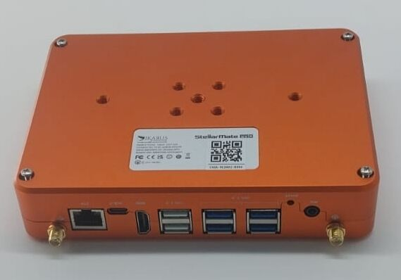
Remove Antennas: Carefully detach the WiFi and GPS antennas from the device.
Open the Case: Unscrew the four M3 screws at the back of the StellarMate Pro case. Gently lift the lid, taking care not to damage the internal antenna cables.
{kind=link}
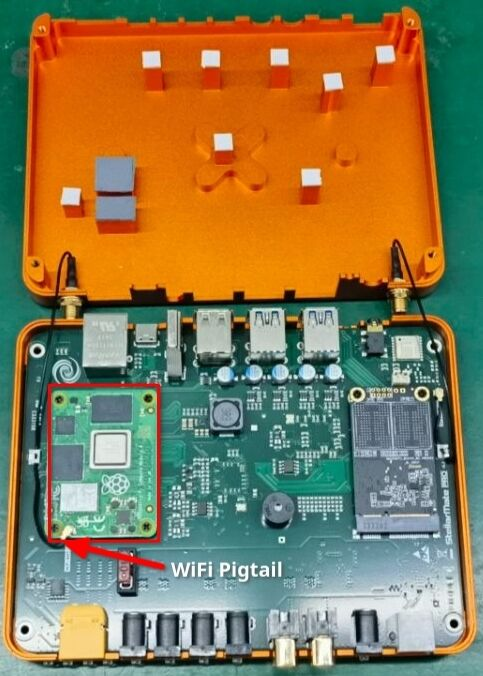
- Disconnect CM4
Disconnect the pigtail cable from the CM4.
Unscrew the four M2.5 screws securing the CM4.
Carefully lift the CM4 from the onboard sockets.
- Install New CM4
Align the new CM4 with the sockets.
Gently press the left side of the CM4 into place until you hear a distinct clicking noise.
Then, gently press the right side of the CM4 into place until you hear a second clicking noise. Ensure the CM4 is fully seated.
- Reconnect Pigtail Cable
Connect the pigtail cable to the CM4. Ensure a secure connection.
Secure the pigtail cable to the metal cable clip using the provided fastener.
- Close the Case
Lower the lid and secure it with the four M3 screws.
Reattach the WiFi and GPS antennas.
- Important notes
Handle the CM4 and other components with care to avoid damage.
Use the provided screws and avoid over tightening them.
If you encounter difficulties, consult the StellarMate Pro support resources or seek professional assistance.
2.15. Troubleshooting
# |
Issue |
Possible Causes |
1 |
Unit does not power up |
|
2 |
Unit does not boot up:
|
|
3 |
Output DC port not supplying power |
|
4 |
Output PWM port not supplying power |
|
5 |
Variable voltage not supplying power |
|
6 |
No GPS Lock |
|
7 |
Weak or no WiFi signal. |
|
8 |
No Sensor data |
|